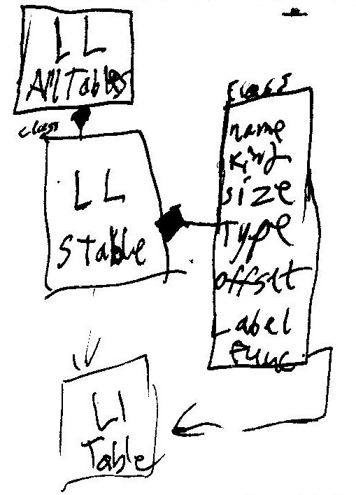
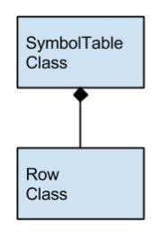

UML
Symbol Table UML sketch (Before Coding)

After our initial design of the symbol table and its implementation, we realized we needed only to make a new instance of the SymbolTable class for each table, which would have it’s own set of associated Row classes.
Symbol Table UML (Revised After Coding)
